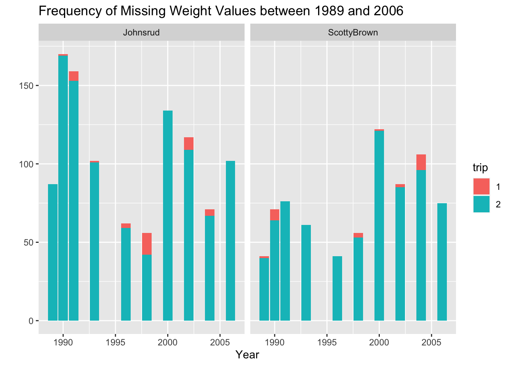
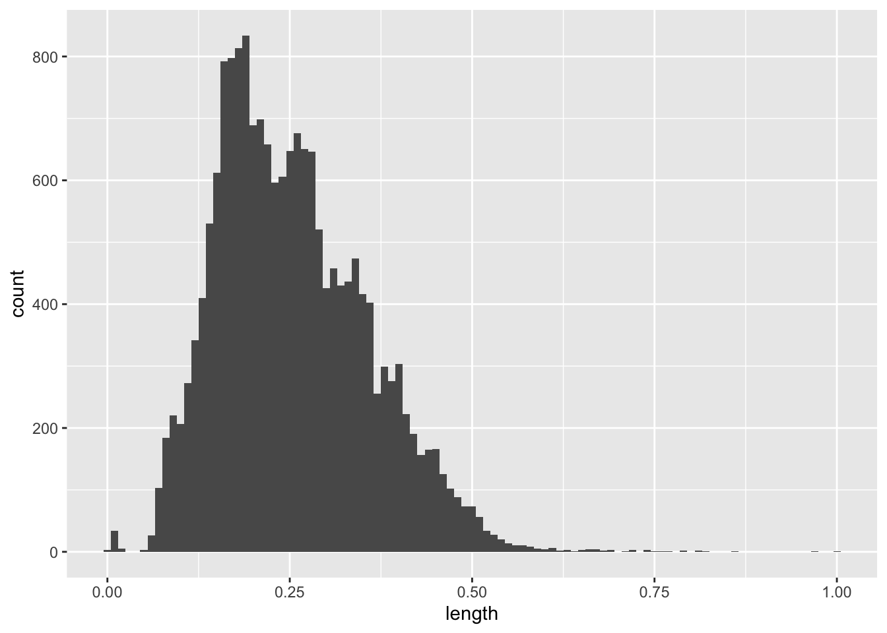

library(tidyverse)
library(here)
fish <- read_csv(here("supporting_artifacts",
"learning_targets",
"Lab 7",
"BlackfootFish.csv"))Lab 7
Data Import and Packages
Part 1
Task 1
fish |>
summarize(across(.cols = everything(), .fns = ~sum(is.na(.)), na.rm = TRUE))# A tibble: 1 × 7
trip mark length weight year section species
<int> <int> <int> <int> <int> <int> <int>
1 0 0 0 1796 0 0 01796 observations have missing values. They are all present in the weight variable.
Task 2
# Visualize Missing Values
fishgraph <- fish |>
group_by(trip, year, section) |>
summarize(weight = sum(is.na(weight))) |>
mutate(trip = as.character(trip)) |>
ggplot(mapping = aes(x = year, y = weight, fill = trip)) +
geom_col() +
labs(x = "Year",
y = "",
title = "Frequency of Missing Weight Values between 1989 and 2006",
color = "trip") +
facet_wrap(~section)
fishgraph
Part 2
# Original Rescale
BlackfootFish <- fish |>
mutate(length = (length - min(length, na.rm = TRUE)) /
(max(length, na.rm = TRUE) - min(length, na.rm = TRUE)),
weight = (weight - min(weight, na.rm = TRUE)) /
(max(weight, na.rm = TRUE) - min(weight, na.rm = TRUE))
)Task 1, 2, 3
#Rescale numeric values between 0 and 1
rescale_01 <- function(vect){
stopifnot(is.numeric(vect), length(vect) >= 1)
minvect <- min(vect, na.rm = TRUE)
maxvect <- max(vect, na.rm = TRUE)
return((vect - minvect) / (maxvect - minvect))
}
x <- c(1:25, NA)
rescale_01(x) [1] 0.00000000 0.04166667 0.08333333 0.12500000 0.16666667 0.20833333
[7] 0.25000000 0.29166667 0.33333333 0.37500000 0.41666667 0.45833333
[13] 0.50000000 0.54166667 0.58333333 0.62500000 0.66666667 0.70833333
[19] 0.75000000 0.79166667 0.83333333 0.87500000 0.91666667 0.95833333
[25] 1.00000000 NATask 4
# Side-by-Side histograms to show the data is the same distribution, different scale
fishgraph2 <- data.frame(length = c(rescale_01(fish$length)))
ggplot(data = fish, mapping = aes(x = length)) +
geom_histogram(binwidth = 10)
ggplot(data = fishgraph2, mapping = aes(x = length)) +
geom_histogram(binwidth = 0.01)
Task 5 & 6
# Perform Rescale on a Column
rescale_column <- function(df, varname){
stopifnot(is.data.frame(df))
df |>
mutate(
across(
.cols = {{ varname }},
.fns = rescale_01
)
)
}
fish |>
rescale_column(c(length, weight))# A tibble: 18,352 × 7
trip mark length weight year section species
<dbl> <dbl> <dbl> <dbl> <dbl> <chr> <chr>
1 1 0 0.280 0.0374 1989 Johnsrud RBT
2 1 0 0.280 0.0406 1989 Johnsrud RBT
3 1 0 0.277 0.0524 1989 Johnsrud RBT
4 1 0 0.315 0.0588 1989 Johnsrud RBT
5 1 0 0.305 0.0641 1989 Johnsrud RBT
6 1 0 0.358 0.0812 1989 Johnsrud RBT
7 1 0 0.261 0.0363 1989 Johnsrud RBT
8 1 0 0.148 0.00855 1989 Johnsrud RBT
9 1 0 0.203 0.0171 1989 Johnsrud RBT
10 1 0 0.145 0.00748 1989 Johnsrud RBT
# … with 18,342 more rows